The large image in each section is the original reference. The smaller images render the actual app components in an isolated React Native Web fixture harness at 393×852. Local sample photos populate layouts without writing to Convex. Authentication, native pickers, system alerts, navigation bars, and tabs in this harness are substituted; these captures prove component layout, not native or live-service acceptance. Native iOS evidence appears at the end.
Boards 01 and 02 define the design system and journey, rather than individual app screens. Original option B applies: no coffee hero on sign-in. Screen dimensions, real account data, OS controls, accessibility sizing, and supported beta capabilities affect the final presentation.
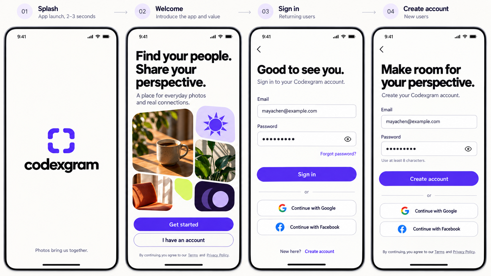
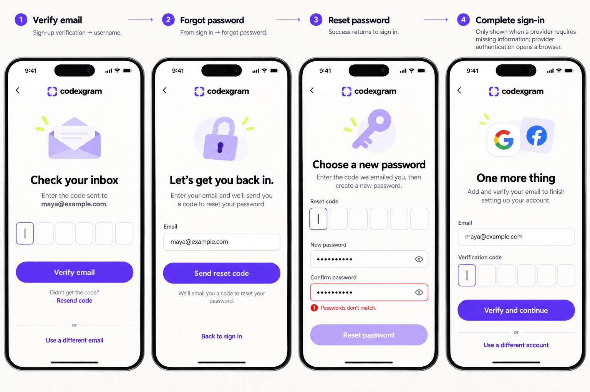
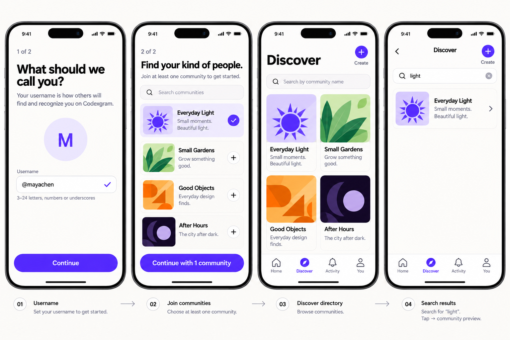
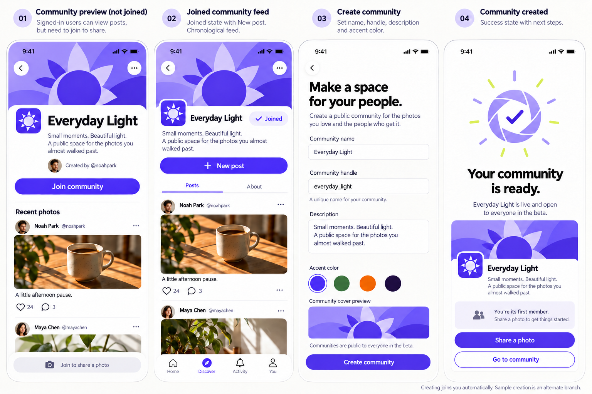
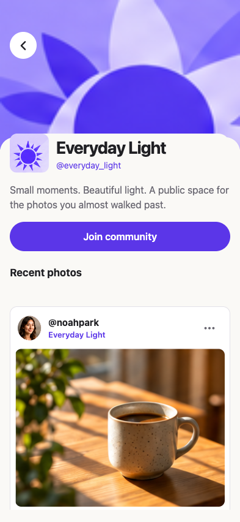
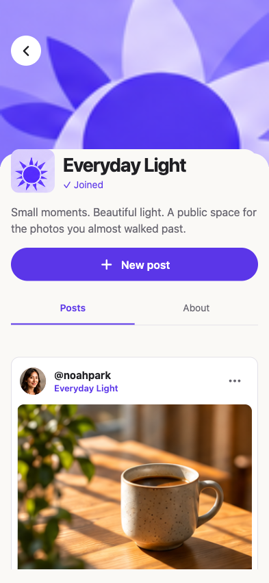
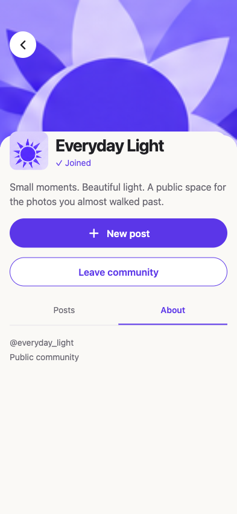
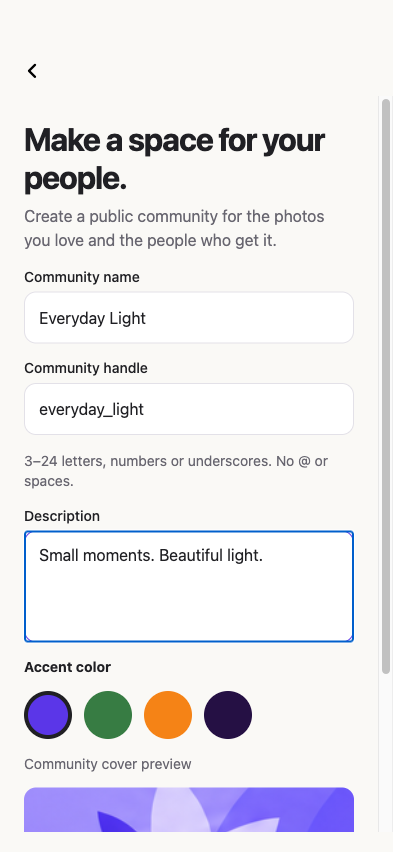
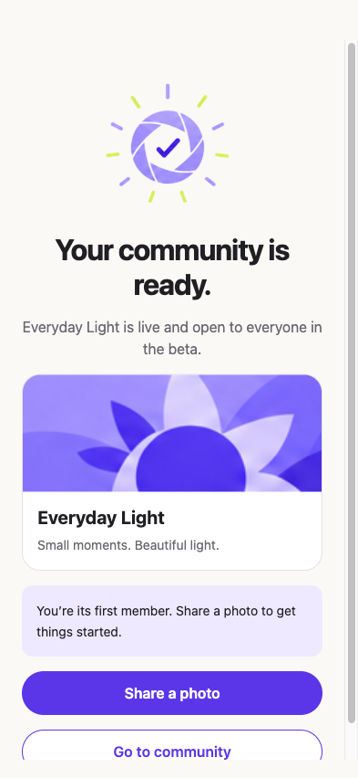
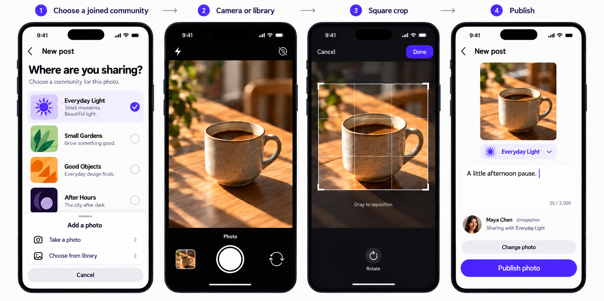
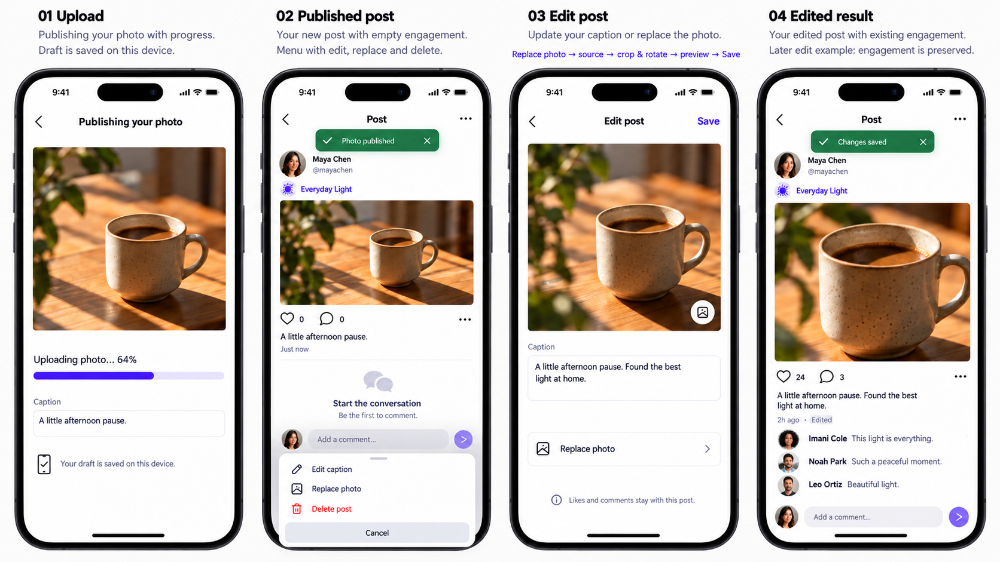
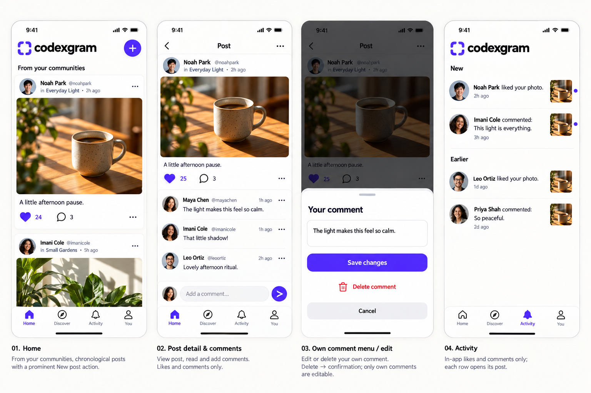
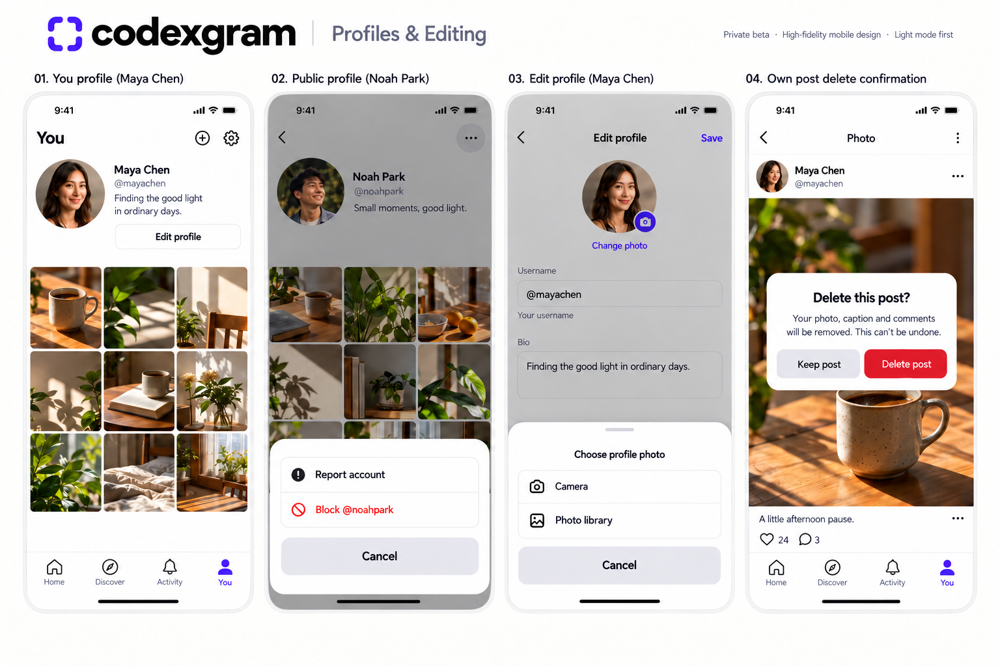
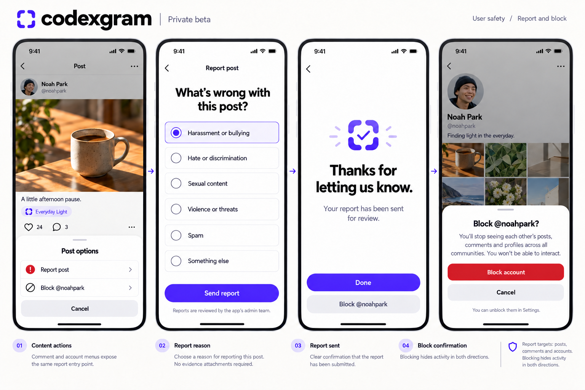
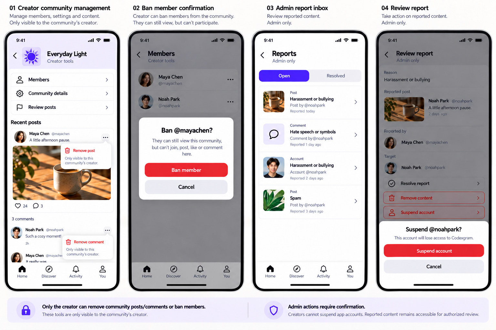
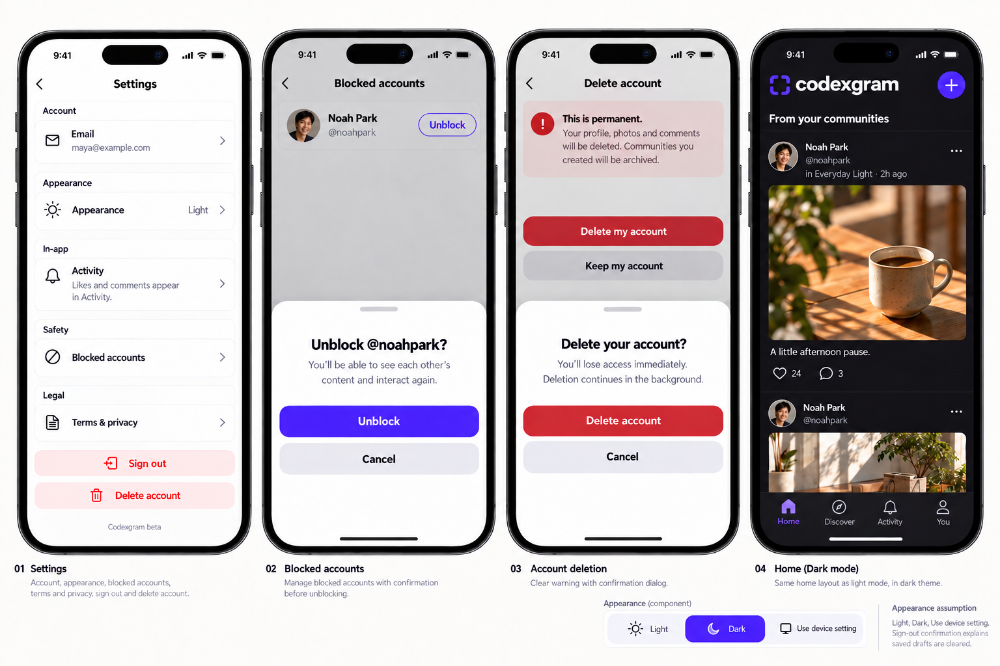
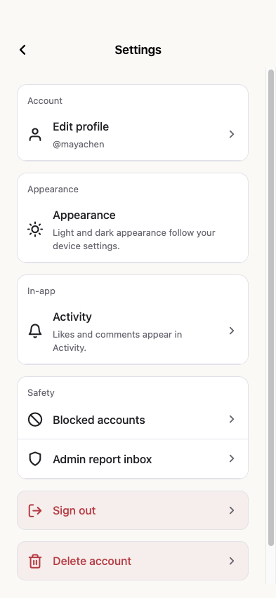
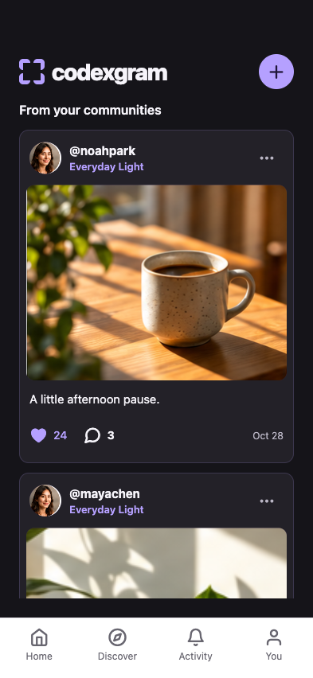
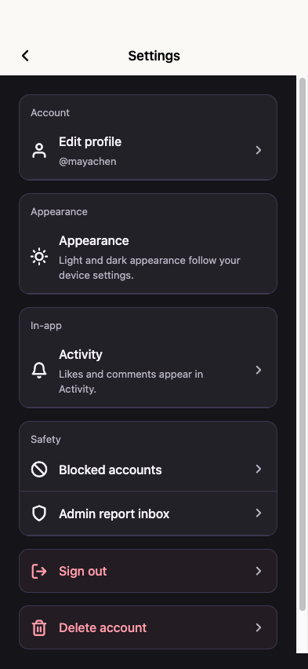
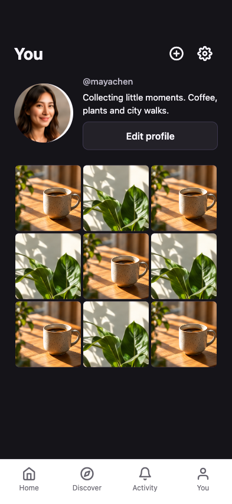
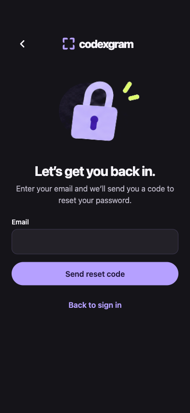